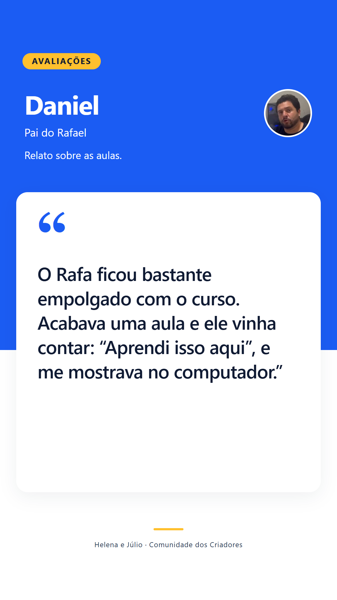
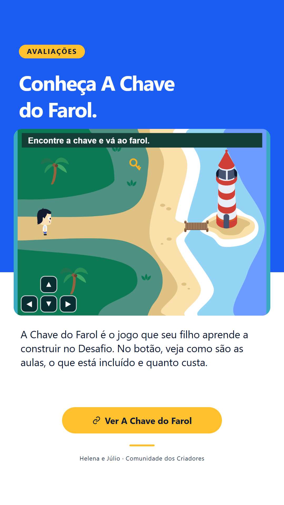

<!doctype html><meta charset="utf-8"><style>body{margin:20px;background:#dce4ee;display:grid;grid-template-columns:repeat(4,270px);gap:18px;font:17px Arial}figure{margin:0}img{display:block;width:270px;height:480px}figcaption{padding:8px 0}</style><figure><figcaption>1 · AV01</figcaption></figure><figure><figcaption>2 · Rafael</figcaption></figure><figure><figcaption>3 · Daniel</figcaption></figure><figure><figcaption>4 · Débora</figcaption></figure><figure><figcaption>5 · Jeffrey</figcaption></figure><figure><figcaption>6 · Harle</figcaption></figure><figure><figcaption>7 · André</figcaption></figure><figure><figcaption>8 · Fernando</figcaption></figure><figure><figcaption>9 · Flávia</figcaption></figure><figure><figcaption>10 · AV05</figcaption></figure>